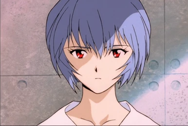

Rei
Rei Ayanami est l'un des personnages principaux de la série d'animation japonaise Neon Genesis Evangelion, de son film conclusif The End of Evangelion et de la tétralogie cinématographique Rebuild of Evangelion. Elle apparaît également dans les nombreuses adaptations en manga et jeu vidéo que la série a connu depuis sa création en 1995. Rei est une adolescente mystérieuse qui a grandi au sein de l'organisation confidentielle NERV. Elle pilote le prototype d'Evangelion EVA-00, une arme ayant l'apparence d'un robot géant, pour combattre des monstres appelés « Anges » qui menacent l'Humanité. C'est un personnage mystérieux et complexe qui s'exprime peu et semble totalement dénué d'émotion. Sa véritable nature n'est révélée que lors de la dernière partie de l'intrigue de la série : son importance s'accroît au fil des épisodes pour arriver à une place centrale dans le film The End of Evangelion. Présentation et personnalité Rei Ayanami est la pilote de l'EVA-00 et porte à ce titre le surnom de « First Children »1,2. Elle apparaît au début de la série comme un personnage très mystérieux dont la plupart des informations relatives à son passé son inconnues. Elle a grandi dans le Geofront, le quartier général de la NERV. Tout comme Shinji Ikari, Rei est très réservée et introvertie : à l'école, elle s'isole, ne parle à personne, et n'a, par conséquent, presque aucun ami3,4. Elle apparaît presque toujours sans aucune émotion (sauf en présence du commandant Gendō Ikari) mais n'est pas dépourvue de sentiments5. Au cours de l'intrigue, elle aura des sentiments grandissants pour Shinji : aidés par la similitude de leurs caractères, ils finiront par se comprendre mutuellement et se porter une affection sincère, surmontant ainsi leur douloureuse solitude6. Cette personnalité particulière provient du secret qui entoure la véritable nature de Rei. Elle est en réalité le deuxième « exemplaire » d'une série de clones chimériques créée artificiellement à partir du corps de Lilith (le « Deuxième Ange ») et des gènes de Yui, la mère de Shinji. Elle possède ainsi l' « âme » de Lilith et le corps de Yui. Consciente de ce fait, elle considère sa vie comme peu importante puisque remplaçable.